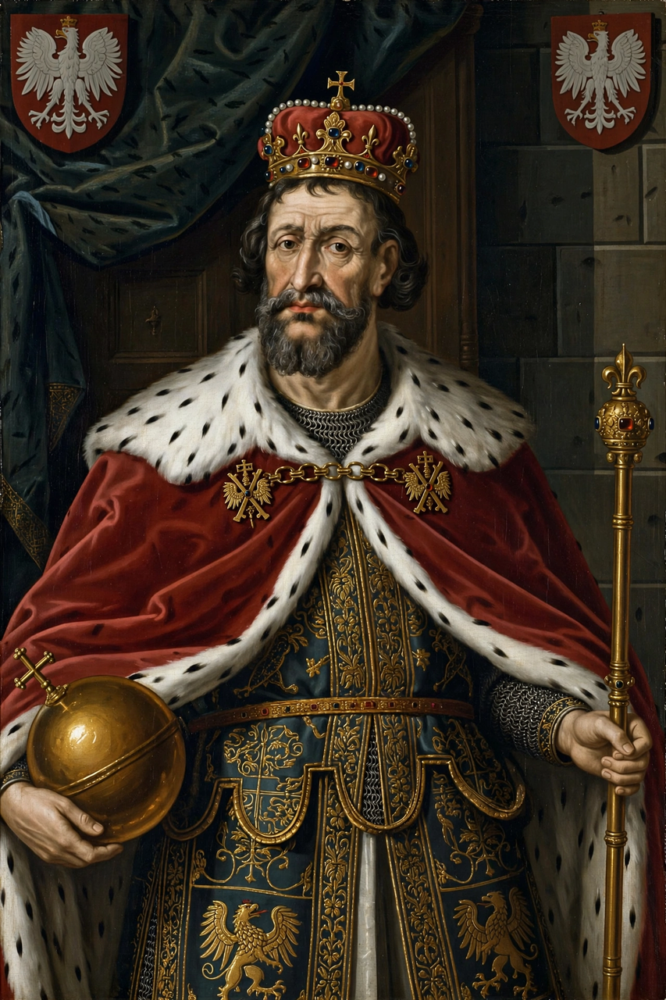

| Władysław II Jagiełło | |
|---|---|
| Reign | King of Poland: 1386–1434 (jure uxoris, then in his own right with Jadwiga) Grand Duke of Lithuania: 1377–1381, 1382–1392 |
| Born | c. 1352/1362, Vilnius, Grand Duchy of Lithuania |
| Died | 1 June 1434, Gródek Jagielloński |
| Burial | Wawel Cathedral, Kraków |
| Spouses | Jadwiga of Poland; Anna of Cilli; Elizabeth Granowska; Sophia of Halshany |
| Dynasty | Gediminid; founder of the Jagiellonian dynasty |
| Father | Algirdas, Grand Duke of Lithuania |
| Religion | Born pagan; baptised Roman Catholic (1386) |

Władysław II Jagiełło (c. 1352/1362 – 1 June 1434), known in Lithuanian as Jogaila, was Grand Duke of Lithuania and, from 1386, King of Poland (initially jure uxoris jointly with his wife Jadwiga until her death in 1399). He founded the Jagiellonian dynasty, which ruled Poland-Lithuania and at times Bohemia and Hungary for nearly two centuries. By accepting baptism and marrying Jadwiga under the Union of Krewo, he Christianised Lithuania — the last pagan state in Europe — and forged the Polish–Lithuanian union. His victory over the Teutonic Order at the Battle of Grunwald in 1410 is one of the most celebrated events in Polish and Lithuanian history.
Jogaila was a son of Grand Duke Algirdas and his second wife Uliana of Tver. On Algirdas's death in 1377 he inherited the grand ducal throne, but his rule was contested by his uncle Kęstutis and cousin Vytautas, in a civil struggle during which Jogaila controversially negotiated with the Teutonic Knights, Lithuania's crusading enemies, and had Kęstutis imprisoned and killed (1382). The instability of his position and pressure from the Order and from Moscow pushed him toward alliance with Poland.
Under the Union of Krewo (1385), Jogaila promised to accept Roman Catholicism, marry the young Polish queen Jadwiga, free Christian captives, and join his Lithuanian and Ruthenian lands permanently to the Polish Crown. He was baptised in Kraków on 15 February 1386, taking the Christian name Władysław, married Jadwiga three days later, and was crowned King of Poland on 4 March. The following year he oversaw the mass baptism of the Lithuanians and founded the bishopric of Vilnius.
Jogaila's cousin Vytautas, after initially fleeing to the Teutonic Order, reconciled with him and was recognised as Grand Duke of Lithuania (effectively autonomous) by the agreements of Astrava (1392) and Vilnius–Radom (1401), with Jogaila as supreme duke. Together they rebuilt Lithuanian power, though Vytautas's ambitions for a royal crown of his own strained the alliance near the end of his life (he died in 1430).
The Polish–Lithuanian–Teutonic War of 1409–1411 culminated in the Battle of Grunwald (Tannenberg) on 15 July 1410, where the combined Polish–Lithuanian army commanded by Jogaila and Vytautas crushed the Teutonic Knights and killed their Grand Master, Ulrich von Jungingen. The subsequent First Peace of Thorn (1411) was comparatively mild, but Grunwald broke the Order's military prestige permanently and shifted the balance of power in east-central Europe decisively toward the Jagiellonian union.
Jogaila's later reign saw the Union of Horodło (1413), which extended Polish noble privileges to Catholic Lithuanian boyars, continued friction with the Order, and diplomacy with Emperor Sigismund. His marriages to Anna of Cilli and Elizabeth Granowska produced no sons; only his fourth wife, Sophia of Halshany, bore heirs — Władysław III and Casimir IV — securing the dynasty. He died in 1434, reportedly after catching a chill listening to a nightingale, and was buried in Wawel Cathedral, where his Gothic tomb remains. His 48-year reign was among the longest of any Polish monarch.